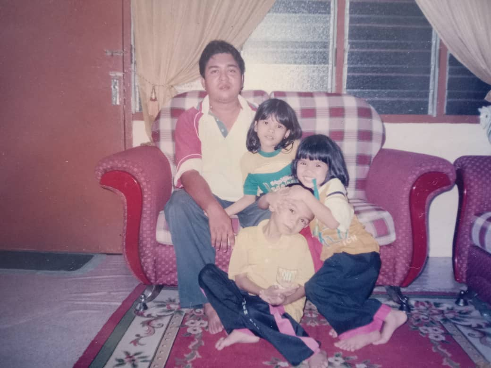

Home
About Me
Experience
My Family
MY FAMILY STORY

My family is everything for me they are my moral support that always help me especially when I in the very hard part of my life. This pitures is my sweet memories in my life. I live in small family but full with love my father name is Suhaimi and my mother name is Fauziah. They are loving couple that always support each other my family always together throught everything. We love go to vacation go throught Malaysia. I also always take picture together with my family when we go to vacation. My father is goverment worker at Jabatan Veterinar. He is caring father and always make sure all of his children in a good health and always make sure we always get a good education in life. My mother is a good mother she always serve and cook for us healthy and delicious food.
In the siblings I am very closed to my elder sister, she always treat me when her pay day. She also the one that always believe in me when I am in hard situation. My brother is the person that always give me sugesttion and advice when I have problem. My litle brother is my sweet candy. He is cute litle boy that always make me laught with his funny jokes. In siblings I am the talented one which I really like to do enjoy thing.
BIRTHDAY CELEBRATION WITH FAMILY
Your browser does not support the video tag.
FAMILY VACATION
Your browser does not support the video tag.
FAMILY VACATION TO MY VILLAGE JOHOR
Your browser does not support the video tag.